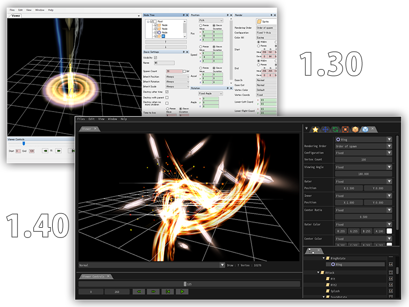
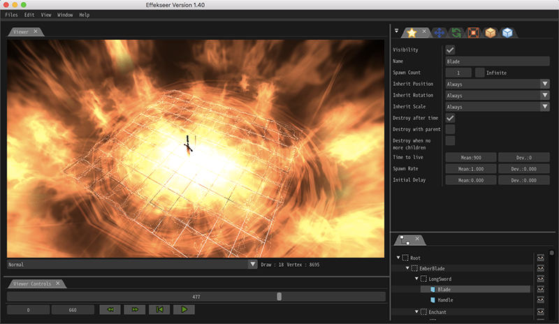
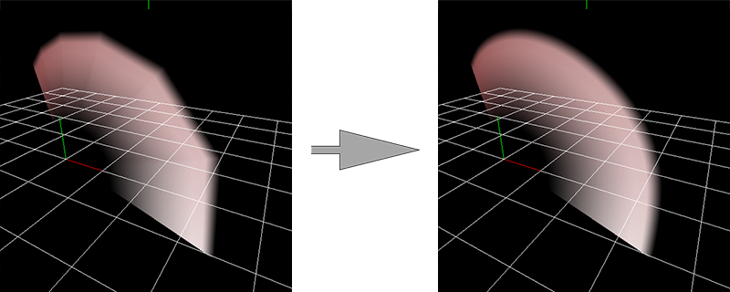
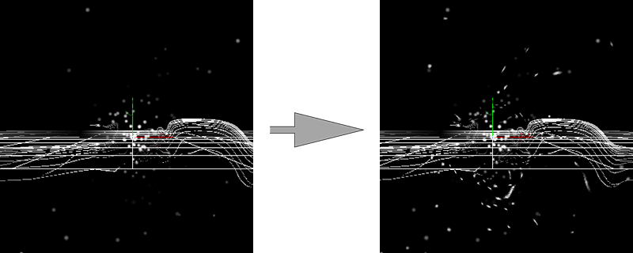
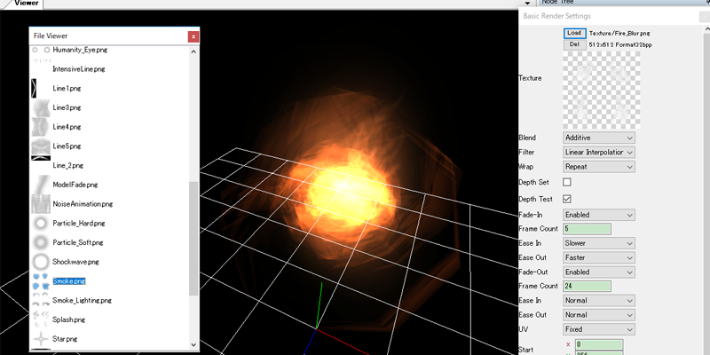
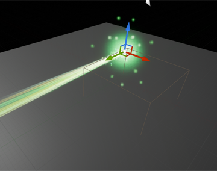
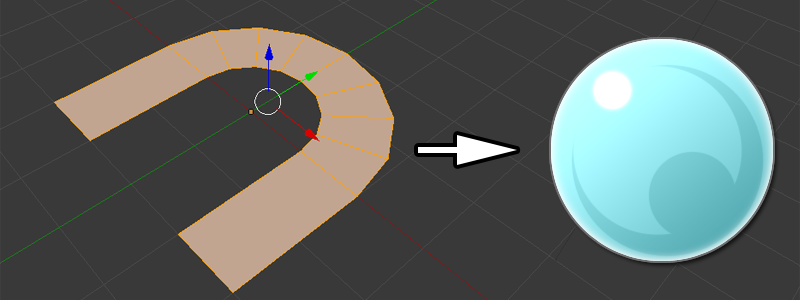
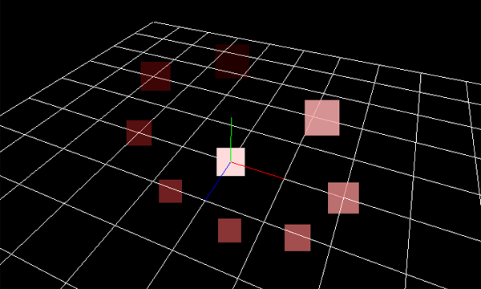
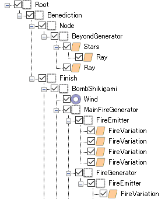
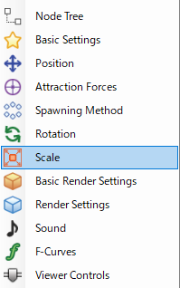

リリースノート
1.40
UIの一新
全てのUIが置き換わりました。テーマがダークカラーになり、操作性が向上しました。

macOS対応
EffekseerがmacOSで動作するようになりました。

アニメーション付きモデルの読み込み
アニメーション付きのFBXを読み込めるようになりました。 モデルとしても生成方法の位置としても使用できます。
めり込み防止パラメーターの追加
奥行き方向に対して移動させるパラメーターが追加されました。それにより、エフェクトとオブジェクトのめり込みの防止が簡単になりました。
軌跡やリボンを滑らかにするパラメーターの追加
軌跡やリボンを滑らかにするパラメーターが追加されました。

歪みの改良
描画優先度の設定により、エフェクトをエフェクトの歪みで歪ませれるようになりました。

サンプルエフェクト
40個以上のサンプルエフェクトが追加されました。公式サイトからダウンロードできます。

不具合修正
複数のバグが修正されました。
1.30
ファイルビューワ
Effekseerのファイルや画像、モデルファイル等をEffekseerから簡単に選択できるようになりました。サンプルを見る場合や画像を選択する場合に便利です。

UnrealEngine4、Cocos2d-x対応
UnrealEngine4、Cocos2d-xでもEffekseerのエフェクトを再生できるようになりました。 それにより、主要な開発環境全てでエフェクトを再生できるようになりました。


モデル読み込みの改良
Effekseerから直接、FBXやmqoファイルを読み込めるようになりました。 それにより、モデルを使用しやすくなりました。

色の継承
位置、回転、拡大と同じように親の色も継承できるようになりました。 それにより、より複雑なエフェクトを作成できるようになりました。

アイコン
UIにアイコンが表示されるようになりました。それにより、エフェクトの構造が見やすくなりました。


サンプルエフェクト
70個以上のサンプルエフェクトが追加されました。公式サイトからダウンロードできます。

不具合修正
複数のバグが修正されました。
仕様変更
歪みやエフェクト生成のタイミングの仕様が変更されています。詳しくはヘルプを読んでください。
1.20
アルファチャンネル推定
動画を出力する時に、アルファチャンネルを推定します。加算合成なしにエフェクトを他の画面に描画できます。2Dゲームでエフェクトを再生しやすくなりました。

Off

On
アルファ付きAVI形式でエフェクトを保存する機能
アルファ付きAVI形式でエフェクトを保存できるようになりました。AfterEffectsといった映像編集ソフトで映像を作成するときに便利になりました。
サンプルエフェクト
20個以上のサンプルエフェクトが追加されました。公式サイトからダウンロードできます。

ショートカットの変更
アフターエフェクトに似ているショートカットに変更されました。
不具合修正
複数のバグが修正されました。
1.10
カラースペース
編集中にカラースペースを変更できるようになりました。


英語版UI
英語UIを選択できるようになりました。


サンプルエフェクト
100個以上のサンプルエフェクトが追加されました。公式サイトからダウンロードできます。
Unityプラグインの改良
Resourcesからのリソース読み込みに対応しました。
DXライブラリ向けライブラリの改良
歪み、ネットワークに対応しました。
不具合修正
複数のバグが修正されました。